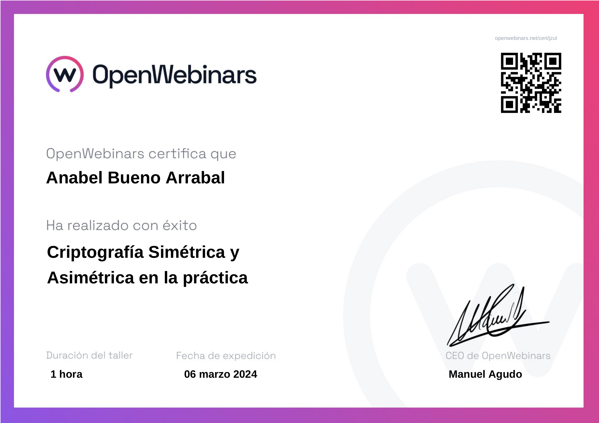
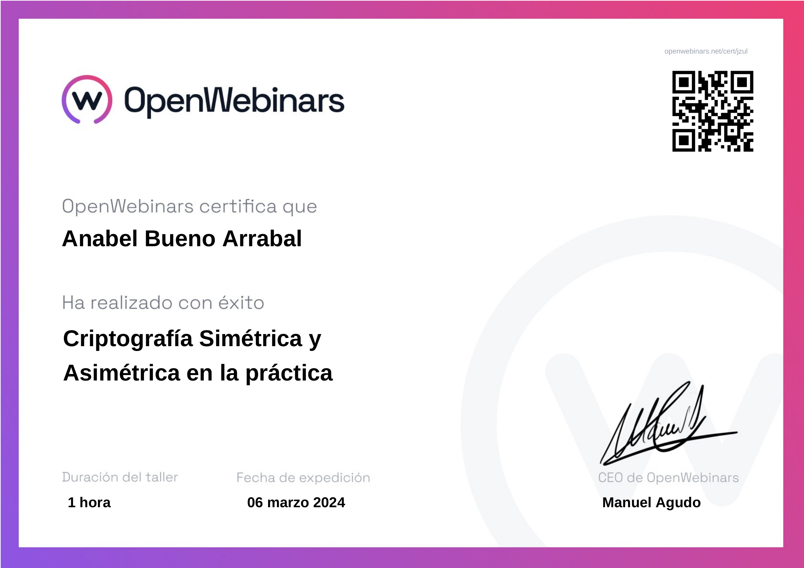

Anabel Bueno Arrabal - Auxiliar en Sistemas Microinformáticos y Redes
"Go, enjoy life. Indulge yourself in every sinful pleasure. Take all the time you need."
"Go, enjoy life. Indulge yourself in every sinful pleasure. Take all the time you need."

La Música: Un Lenguaje Universal
La música es el latido que acompaña mi vida, el ritmo que me impulsa a crear y soñar. Desde las melodías más suaves hasta los sonidos más vibrantes, cada nota tiene el poder de contar historias que no necesitan palabras. Me encanta sumergirme en nuevos géneros, explorar ritmos de todo el mundo y dejar que la música me lleve a lugares donde las emociones se expresan sin barreras. La música es mi escape, mi compañero de inspiración, siempre lista para acompañarme en cualquier momento del día.

La Cocina: El Arte de Crear Sabores
Para mí, la cocina es más que una actividad diaria: es una forma de arte, una manera de combinar ingredientes y emociones. En cada receta, encuentro una oportunidad para experimentar, para jugar con sabores y texturas, creando algo único y delicioso. Me encanta descubrir nuevos platos, probar combinaciones inusuales y, por supuesto, compartir mis creaciones con quienes más quiero. La cocina no es solo un hobby; es una forma de expresarme, una invitación a disfrutar de los pequeños placeres de la vida.

El Diseño Gráfico: Un Mundo de Creatividad Visual
El diseño gráfico es mi pasión y mi manera de conectar ideas con imágenes. A través de colores, formas y tipografías, soy capaz de dar vida a conceptos, transformándolos en obras visuales que comunican mensajes poderosos. Cada proyecto es una nueva aventura, una oportunidad para desafiar los límites de la creatividad y explorar nuevas técnicas. Me fascina cómo el diseño puede influir en la percepción, despertar emociones y contar historias, todo a través de una imagen bien pensada.
 
